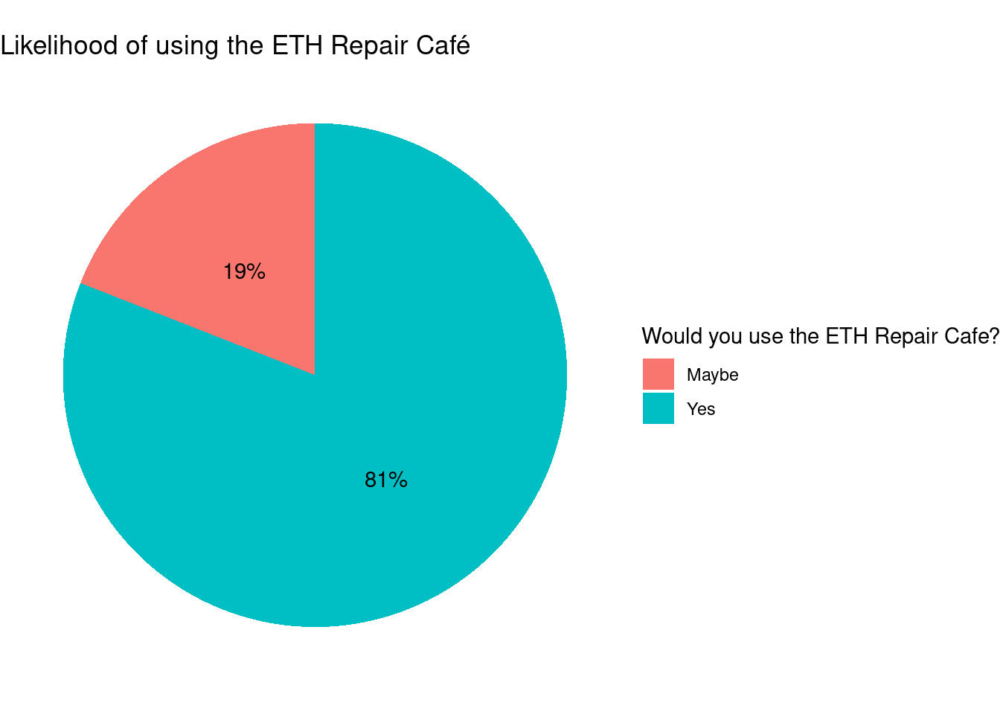

Repairing is one of the most effective strategies for reducing waste and environmental impact, and as Laitala et al. (2021) stated that “a surprisingly high share of repairs is conducted by consumers themselves”, it is very important to have the right facilities in place to support repair efforts. Hernandez, Miranda, and Goñi (2020) highlight that empowering consumers with the ‘Right to Repair’ is crucial for sustainable consumption, as it encourages prolonging product lifespans and reduces the need for new resource extraction. Despite this, many products are discarded due to high repair costs and limited access to repair services (Blake, Farrelly, and Hannon 2019). This project investigates the potential impact of establishing a permanent Repair Café at ETH Zürich by surveying student attitudes toward repair and waste behavior. The central research question is: What percentage of students would consider repairing a broken item themselves or with help if there were a designated Repair Café at ETH Zürich?
Methods
Data was collected through a short online survey conducted via Google Forms, consisting of 18 questions. The survey gathered demographic information such as age, university affiliation, and estimated monthly food budget as a proxy for overall financial resources. Participants were also asked about their sustainability attitudes and waste-related behavior over the past year, including whether they had discarded items that could potentially have been repaired. In the final section, the concept of a permanent Repair Café at ETH Zürich was introduced, and participants were asked how likely they would be to use such a service.
Results
In this section, the 21 responses to the survey are summarized and visualized. Figure 1 shows that majority of participants were students of ETH Zürich between 21 and 25 years old. This was not a condition to participate in the survey, but rather a product of how the survey was distributed and advertised, as participants were mostly found via whatsapp-groupchats of ETH students.
Code
library(tidyverse)library(ggplot2)library(ggthemes)library(ggridges)library(gt)library(knitr)data <-read_csv("../data/processed/repaircafe_data_processed.csv",show_col_types =FALSE)data_demographic <-data %>%select(age,gender,uni,monthly_food_expenses) %>%mutate(uni =case_when(uni =="I am not a student"~"not a student", TRUE~ uni))ggplot(data = data_demographic, aes(x = age, fill = uni)) +geom_bar()+labs(title="Demographical data",fill="University")write_csv(data_demographic,"../data/final/data_demographic_plot.csv")
Figure 1: Age and university of the 21 survey participants
Repairing skill self-assessment
In Table 1 you can see the results of the skill self-assessment where participants had to rate their repair skills in various categories on a scale from 1-5. The relatively high standard deviations indicate a diverse level of skills among the participants. Metalworking stands out with the lowest average level of repair skills among the participants, which could be due to the inaccessibility of proper metal workshops and maybe also due to the fact that metalworking is probably one of the more dangerous categories of repairing. Here the ETH Repair cafe could do a great job as a place where new skills in new domains could be acquired and learned in a safe environment.
Code
#convert to long formatdata_skill_tbl <- data %>%select(12:17) %>%# Keep only the 6 response columnspivot_longer(cols =everything(), # Turn them into two columnsnames_to ="skill",values_to ="value")#summary tableskill_summary_table <- data_skill_tbl %>%group_by(skill) %>%summarise(mean =mean(value, na.rm =TRUE),sd =sd(value, na.rm =TRUE),median =median(value, na.rm =TRUE),min =min(value, na.rm =TRUE),max =max(value, na.rm =TRUE),count =n(),.groups ='drop' )#rename category namesskill_summary_table <- skill_summary_table %>%mutate(skill=factor(skill,levels =c("skill_assembly","skill_electronics","skill_filigrane","skill_metal","skill_textile","skill_wood"),labels =c("Assembly","Electronics","Filigrane work" ,"Metalworking","Textile","Woodworking")))skill_summary_table %>%gt() %>%tab_header(title ="Repair skills assesment in various categories",subtitle ="Linear Scale from 1-5") %>%fmt_number(columns = mean:count, decimals =2) %>%cols_label(skill ="Skill category")write_csv(skill_summary_table,"../data/final/data_skill_summary_table.csv")
Table 1: Self-assessed repair skills in various categories. Data from 21 survey participants
Repair skills assesment in various categories
Linear Scale from 1-5
Skill category
mean
sd
median
min
max
count
Assembly
3.29
1.35
3.00
1.00
5.00
21.00
Electronics
2.62
1.24
3.00
1.00
5.00
21.00
Filigrane work
2.95
1.36
3.00
1.00
5.00
21.00
Metalworking
2.33
1.20
2.00
1.00
5.00
21.00
Textile
3.00
1.30
3.00
1.00
5.00
21.00
Woodworking
2.90
1.30
3.00
1.00
5.00
21.00
Amount of discarded items
To materialize the potential impact of setting up a permanent repair café at ETH Zürich, participants were asked to disclose the amount of items that were discarded during the last year, which could maybe have been repaired. The results in Figure 2 show that the most commonly discarded items were clothes, which could be due to the abundance and relative low price of clothes, so buying a new clothing item is often the more attractive option compared to repairing an already worn item. What is nice to see is that only for a very small part of the discarded items, a repair was not even considered, while for the majority of items, at least a few items were considered to be repaired.
Code
#Discarded Items and repair considered:data_discarded_items <- data %>%select(19:29) %>%pivot_longer(cols =1:10, names_to ="object",values_to ="amount")data_discarded_items <- data_discarded_items %>%mutate(object =factor(object,levels =c("bi_clothes","bi_other_items","bi_shoes" ,"bi_other_electronics","bi_household_electronics","bi_furniture","bi_computer" ,"bi_tablet","bi_phone","bi_bike"),labels =c("Clothes","Other Items","Shoes","Other Electronics" ,"Household Electronics","Furniture","Computer","Tablet","Phone","Bike")))data_discarded_items %>%group_by(object,repair_considered) %>%summarise(total =sum(amount, na.rm =TRUE), .groups ="drop") %>%ggplot(aes(x =reorder(object, total), y = total,fill = repair_considered)) +geom_col() +coord_flip() +labs(x =NULL, y ="# of discarded items",title ="Total discarded items that could have been repaired",fill ="Was repairing considered?") +theme_minimal() +scale_color_colorblind()write_csv(data_discarded_items,"../data/final/data_discarded_items_plot.csv")
Figure 2: Total amount of potentially repairable items that were discarded last year
Reasons for not repairing
The reasons for not considering a repair were also assessed, which can be seen in Figure 3. It seems that the difficulty of the repair is the most important factor which leads to a broken item not being repaired, together with a lack of motivation. These two factors could maybe also be dependent of each other, as when a repair is assessed as too difficult, obviously the motivation to try to repair it is going to be low as well.
Code
# why you didn't repairdata_norepair_long <-data %>%select(rno_difficult:rno_other) %>%pivot_longer(everything(),names_to ="reason",values_to ="value",values_drop_na =TRUE)data_norepair_long <- data_norepair_long %>%mutate(reason =factor(reason,levels =c("rno_difficult","rno_expensive","rno_motivation" ,"rno_other","rno_time"),labels =c("too difficult","too expensive","not motivated enough" ,"other","not woth my time")))data_norepair_long %>%group_by(reason) %>%summarise(total =sum(value, na.rm =TRUE), .groups ="drop") %>%ggplot(aes(x =reorder(reason, total), y = total)) +geom_col(fill="steelblue") +coord_flip() +labs(x =NULL, y ="number of respondents",title ="Main reasons for not repairing a broken item")+theme_minimal()+scale_colour_colorblind()write_csv(data_norepair_long,"../data/final/data_repair_not_feasible.csv")
Figure 3: Main reasons for not considering to repair a broken item, n= 12 responses
Cost of repair
The second-most important reason for not repairing an item is the price of the repair. Here participants were also asked how much they would be willing to pay for a repair, these results can be seen in Figure 4. It seems that the average participant would be willing to pay up to 40% of the new price to get an item repaired. This is an interesting number that scales with the value of the item: the budget for replacement parts for a broken computer for example is way higher than for a cheap tshirt, so more expensive items are probably also repaired more often in general.
Code
# How much would you pay in percent of new price? data_maxprice <- data %>%select(max_price_of_repair)ggplot(data_maxprice, aes(x = max_price_of_repair)) +geom_histogram(binwidth =5, fill ="steelblue", color ="white") +labs(x ="price in % of items new price", y ="Frequency", title ="Maximum price of repair")write_csv(data_maxprice,"../data/final/data_max_price_plot.csv")
Figure 4: Maximum price that participants would pay for a repair.
ETH Repaircafe
The concept of a permanent repair cafe was introduced and as Figure 5 shows, 81 % of the participants would consider repairing a broken item at the ETH Repair Café, while the remaining 19 % stated that they would maybe do so as well. This shows that a there is definetly an interest in having a place where you can repair stuff while having skilled people around that can help.
In Table 2 it can be seen that at least 33% of participants would consider helping others with repairs at least once a month, while 52% would maybe do so. By having a pool of skilled volunteers, the ETH repair café could work without a big amount of monthly expenses (excluding rent and the initial costs of all the machines etc. of course), which is key to keep the price low which leaves more budget for the actual repairs.
Code
#Likelihood of ETH Repaircafe usage:data_repaircafe_summary <- data %>%count(eth_rc) %>%mutate(rc_percent =round(n /sum(n) *100))ggplot(data = data_repaircafe_summary, aes(x ="",y = n,fill = eth_rc)) +geom_col(width =1) +coord_polar(theta ="y") +geom_text(aes(label =paste0(rc_percent, "%")), position =position_stack(vjust =0.5)) +theme_void() +labs(title="Likelihood of using the ETH Repair Café",fill ="Would you use the ETH Repair Cafe?")write_csv(data_repaircafe_summary,"../data/final/data_repaircafe_plot.csv")

Figure 5: likelihood of using the ETH Repair cafe
Code
# Step 1: Pivot the two columns into long formatdata_eth_rc <- data %>%select(eth_rc_help, eth_rc_learn) %>%pivot_longer(cols =everything(), names_to ="variable", values_to ="response")data_eth_rc <-data_eth_rc %>%mutate(variable =factor(variable,levels =c("eth_rc_help","eth_rc_learn"), labels =c("Would you consider helping out at the ETH RC?","Would you be motivated to learn new repair skills?")))# Step 2: Count and compute percent per variable and responsedata_eth_rc_tbl <- data_eth_rc %>%group_by(variable, response) %>%summarise(n =n(), .groups ="drop") %>%group_by(variable) %>%mutate(percent =round(n /sum(n) *100, 1)) %>%ungroup() %>%select(variable, response, percent) %>%pivot_wider(names_from = response, values_from = percent, values_fill =0)# Step 3: Create gt table without row groupingdata_eth_rc_tbl %>%gt(rowname_col =NULL) %>%tab_header(title ="ETH Repair Café Responsens",subtitle ="Percentages of 'Yes', 'Maybe', and 'No', n = 21" ) %>%fmt_percent(columns =c(Yes, Maybe, No),scale_values =FALSE,decimals =1 ) %>%cols_label(variable ="Question",Yes ="Yes (%)",Maybe ="Maybe (%)",No ="No (%)" )write_csv(data_eth_rc_tbl,"../data/final/data_repaircafe_table.csv")
Table 2: Results from survey questions regarding the ETH repair café
ETH Repair Café Responsens
Percentages of 'Yes', 'Maybe', and 'No', n = 21
Question
Maybe (%)
No (%)
Yes (%)
Would you consider helping out at the ETH RC?
52.4%
14.3%
33.3%
Would you be motivated to learn new repair skills?
0.0%
0.0%
100.0%
Conclusions
4.1 items is the average amount of potentially repairable items which the average participant discarded in the last year. This may not seem like a lot, but if this number is scaled to all members of ETH Zürich it is easy to see that if done right, a permanent repair café at ETH could have a great impact on reducing generated waste.
40% of the new price of an item is the average amount participants would pay for a repair. Therefore, running the ETH Repair Café as low-cost as possible is very important. Here a system of student volunteers could be a feasible solution, as:
33% of participants would be willing to help other students with repairs at the Repair Café at least once a month, while 53% stated they would be maybe be willing to help out.
81% of participants would consider repairing a broken item at the ETH Repair Café, while the other 19% would maybe consider to do so.
100% of the participants would be interested in learning new and improving on their repairing skills. Here is where the ETH Repair Café could really make a difference as a place to get educated on repairs, as it is very likely that people with a greater knowledge of how to repair stuff also are more likely to actually try to repair things.
References
Blake, Vicktoria, Trisia Farrelly, and Jonathon Hannon. 2019. “Is VoluntaryProductStewardship for E-WasteWorking in NewZealand? AWhangareiCaseStudy.”Sustainability 11 (11). https://doi.org/10.3390/su11113063.
Hernandez, Ricardo J, Constanza Miranda, and Julian Goñi. 2020. “Empowering SustainableConsumption by GivingBack to Consumers the ‘Right to Repair’.”Sustainability 12 (3). https://doi.org/10.3390/su12030850.
Laitala, Kirsi, Ingun Grimstad Klepp, Vilde Haugrønning, Harald Throne-Holst, and Pål Strandbakken. 2021. “Increasing Repair of Household Appliances, Mobile Phones and Clothing: Experiences from Consumers and the Repair Industry.”Journal of Cleaner Production 282: 125349. https://doi.org/https://doi.org/10.1016/j.jclepro.2020.125349.
![]()